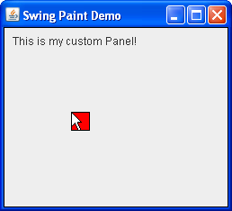

Creating the Demo Application (Step 3)

The Completed Application
Click the Launch button to run SwingPaintDemo3 using Java™ Web Start (download JDK 6). Alternatively, to compile and run the example yourself, consult the example index.
package painting;
import javax.swing.SwingUtilities;
import javax.swing.JFrame;
import javax.swing.JPanel;
import javax.swing.BorderFactory;
import java.awt.Color;
import java.awt.Dimension;
import java.awt.Graphics;
import java.awt.event.MouseEvent;
import java.awt.event.MouseListener;
import java.awt.event.MouseAdapter;
import java.awt.event.MouseMotionListener;
import java.awt.event.MouseMotionAdapter;
public class SwingPaintDemo3 {
public static void main(String[] args) {
SwingUtilities.invokeLater(new Runnable() {
public void run() {
createAndShowGUI();
}
});
}
private static void createAndShowGUI() {
System.out.println("Created GUI on EDT? "+
SwingUtilities.isEventDispatchThread());
JFrame f = new JFrame("Swing Paint Demo");
f.setDefaultCloseOperation(JFrame.EXIT_ON_CLOSE);
f.add(new MyPanel());
f.pack();
f.setVisible(true);
}
}
class MyPanel extends JPanel {
private int squareX = 50;
private int squareY = 50;
private int squareW = 20;
private int squareH = 20;
public MyPanel() {
setBorder(BorderFactory.createLineBorder(Color.black));
addMouseListener(new MouseAdapter() {
public void mousePressed(MouseEvent e) {
moveSquare(e.getX(),e.getY());
}
});
addMouseMotionListener(new MouseAdapter() {
public void mouseDragged(MouseEvent e) {
moveSquare(e.getX(),e.getY());
}
});
}
private void moveSquare(int x, int y) {
int OFFSET = 1;
if ((squareX!=x) || (squareY!=y)) {
repaint(squareX,squareY,squareW+OFFSET,squareH+OFFSET);
squareX=x;
squareY=y;
repaint(squareX,squareY,squareW+OFFSET,squareH+OFFSET);
}
}
public Dimension getPreferredSize() {
return new Dimension(250,200);
}
protected void paintComponent(Graphics g) {
super.paintComponent(g);
g.drawString("This is my custom Panel!",10,20);
g.setColor(Color.RED);
g.fillRect(squareX,squareY,squareW,squareH);
g.setColor(Color.BLACK);
g.drawRect(squareX,squareY,squareW,squareH);
}
}
This change first imports the various mouse classes
from the java.awt.event package, making the application
capable of responding to the user's mouse activity.
The constructor has been updated to register
event listeners for
mouse presses and drags. Whenever a MouseEvent received, it
is forwarded to the moveSquare method, which updates
the square's coordinates and repaints the component in an intelligent manner.
Note that by default, any code that is placed within these event handlers will be
executed on the Event Dispatch Thread.
But the most important change is the invocation of the repaint method. This method is defined by java.awt.Component and is the
mechanism that allows you to programatically repaint the surface of any
given component.
It has a no-arg version (which repaints the entire component) and a multi-arg version (which repaints only the specified area.) This area
is also known as the clip.
Invoking the multi-arg version
of repaint takes a little extra effort,
but guarantees that your painting code will not waste cycles repainting areas of the screen that have not changed.
moveSquare method invokes the repaint method not once, but twice. The first invocation tells Swing to repaint the area of the component where the square previously was (the inherited behavior uses the UI Delegate to fill that area with the current background color.) The second invocation paints the area of the component where the square currently is. An important point worth noting is that although we have invoked repaint twice in a row in the same event handler, Swing is smart enough to take that information and repaint those sections of the screen all in one single paint operation. In other words, Swing will not repaint the component twice in a row, even if that is what the code appears to be doing.
Exercises:
- Comment out the first invocation of repaint and note what happens when you click or drag the mouse. Because that line is responsible for filling in the background, you should notice that all squares remain on screen after they are painted.
- With multiple squares on screen, minimize and restore the application frame. What happens? You should notice that the act of maximizing the screen causes the system to entirely repaint the components surface, which will erase all squares except the current one.
- Comment out both invocations of repaint, and add a line at the end of the paintComponent method to invoke the zero-arg version of repaint instead. The application will appear to be restored to its original behavior, but painting will now be less efficient since the entire surface area of the component is now being painted. You may notice slower performace, especially if the application is maximized.